# 核心包
library(tidyverse) # 数据处理
library(broom) # 模型整理
library(gtsummary) # 结果表格
library(performance) # 模型诊断
library(see) # 可视化支持
library(car) # VIF 检验
library(lmtest) # 诊断检验
library(sandwich) # 稳健标准误
library(interactions) # 交互效应可视化多元线性回归完全指南
R语言方法
统计建模
线性回归
什么是多元线性回归？
多元线性回归（Multiple Linear Regression） 是一种用于分析连续型结局变量与多个解释变量之间关系的统计方法。它是最基础也是最重要的回归分析方法之一。
适用场景
| 场景 | 示例 |
|---|---|
| 预测建模 | 预测房价、销售额 |
| 效应估计 | 控制混杂后估计暴露效应 |
| 变量筛选 | 识别重要预测因子 |
| 趋势分析 | 定量评估剂量-效应关系 |
核心公式
\[Y = \beta_0 + \beta_1 X_1 + \beta_2 X_2 + \cdots + \beta_p X_p + \epsilon\]
其中： - \(\beta_0\)：截距 - \(\beta_i\)：第 i 个预测变量的回归系数 - \(\epsilon \sim N(0, \sigma^2)\)：随机误差
回归系数解读
\(\beta_i\) 表示：在控制其他变量不变的情况下，\(X_i\) 每增加 1 个单位，Y 的平均变化量。
R 包安装与加载
数据准备
使用模拟的健康数据集：
# 模拟数据：收缩压影响因素
set.seed(2024)
n <- 500
bp_data <- tibble(
id = 1:n,
age = round(runif(n, 25, 75)),
sex = factor(sample(c("男", "女"), n, replace = TRUE, prob = c(0.48, 0.52))),
bmi = round(rnorm(n, 25, 4), 1),
smoking = factor(sample(c("从不", "曾经", "现在"), n,
replace = TRUE,
prob = c(0.45, 0.30, 0.25)
)),
exercise = round(pmax(0, rnorm(n, 150, 60))), # 每周运动分钟数
sodium_intake = round(rnorm(n, 2300, 500)), # 每日钠摄入 (mg)
alcohol = round(pmax(0, rnorm(n, 10, 8))) # 每周酒精摄入 (g)
) |>
mutate(
# 生成收缩压（受多因素影响）
sbp = 90 +
0.5 * age +
3 * (sex == "男") +
1.2 * bmi +
3 * (smoking == "曾经") +
8 * (smoking == "现在") +
-0.03 * exercise +
0.005 * sodium_intake +
0.2 * alcohol +
rnorm(n, 0, 10)
) |>
mutate(sbp = round(sbp))
# 查看数据
glimpse(bp_data)Rows: 500
Columns: 9
$ id <int> 1, 2, 3, 4, 5, 6, 7, 8, 9, 10, 11, 12, 13, 14, 15, 16, 1…
$ age <dbl> 67, 41, 59, 60, 48, 60, 46, 40, 69, 31, 70, 73, 60, 51, …
$ sex <fct> 男, 女, 男, 女, 男, 女, 女, 女, 男, 男, 女, 女, 男, 男, 女, 女, 男, 女, 女,…
$ bmi <dbl> 28.1, 22.1, 28.2, 25.1, 33.9, 21.7, 16.6, 32.1, 24.7, 20…
$ smoking <fct> 曾经, 现在, 从不, 曾经, 从不, 曾经, 从不, 从不, 从不, 曾经, 从不, 从不, 从不, 现在, …
$ exercise <dbl> 178, 214, 17, 145, 91, 144, 223, 137, 161, 132, 80, 109,…
$ sodium_intake <dbl> 2436, 2216, 1862, 2072, 2261, 2612, 1845, 2057, 2088, 24…
$ alcohol <dbl> 15, 23, 11, 19, 3, 9, 4, 17, 4, 10, 13, 16, 10, 5, 0, 5,…
$ sbp <dbl> 164, 143, 165, 167, 136, 159, 130, 166, 151, 156, 179, 1…# 结局变量分布
summary(bp_data$sbp) Min. 1st Qu. Median Mean 3rd Qu. Max.
119 148 157 158 167 200 探索性分析
# 连续变量与结局的散点图
bp_data |>
select(sbp, age, bmi, exercise, sodium_intake, alcohol) |>
pivot_longer(-sbp, names_to = "variable", values_to = "value") |>
ggplot(aes(x = value, y = sbp)) +
geom_point(alpha = 0.3, color = "#4f46e5") +
geom_smooth(method = "lm", color = "#ef4444") +
facet_wrap(~variable, scales = "free_x", ncol = 3) +
labs(
title = "收缩压与各预测变量的关系",
x = "预测变量值",
y = "收缩压 (mmHg)"
) +
theme_minimal(base_size = 11)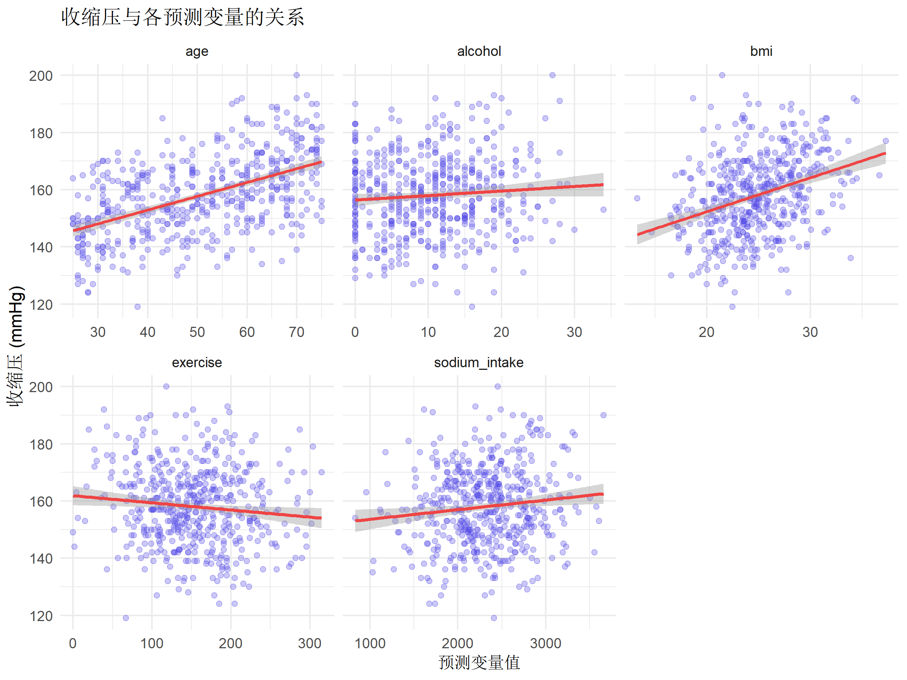
# 相关矩阵
bp_data |>
select(sbp, age, bmi, exercise, sodium_intake, alcohol) |>
cor() |>
round(2) sbp age bmi exercise sodium_intake alcohol
sbp 1.00 0.52 0.34 -0.11 0.12 0.08
age 0.52 1.00 0.03 -0.07 -0.01 -0.02
bmi 0.34 0.03 1.00 0.03 -0.05 -0.04
exercise -0.11 -0.07 0.03 1.00 -0.02 0.03
sodium_intake 0.12 -0.01 -0.05 -0.02 1.00 0.03
alcohol 0.08 -0.02 -0.04 0.03 0.03 1.00模型构建
简单线性回归
# 单变量：年龄 vs 收缩压
model_simple <- lm(sbp ~ age, data = bp_data)
summary(model_simple)
Call:
lm(formula = sbp ~ age, data = bp_data)
Residuals:
Min 1Q Median 3Q Max
-32.926 -7.967 -0.219 8.557 32.628
Coefficients:
Estimate Std. Error t value Pr(>|t|)
(Intercept) 133.58448 1.88853 70.73 <2e-16 ***
age 0.48267 0.03579 13.49 <2e-16 ***
---
Signif. codes: 0 '***' 0.001 '**' 0.01 '*' 0.05 '.' 0.1 ' ' 1
Residual standard error: 11.86 on 498 degrees of freedom
Multiple R-squared: 0.2675, Adjusted R-squared: 0.2661
F-statistic: 181.9 on 1 and 498 DF, p-value: < 2.2e-16# 可视化简单回归
ggplot(bp_data, aes(x = age, y = sbp)) +
geom_point(alpha = 0.4, color = "#4f46e5") +
geom_smooth(method = "lm", color = "#ef4444", fill = "#ef4444", alpha = 0.2) +
labs(
title = "年龄与收缩压的线性关系",
x = "年龄 (岁)",
y = "收缩压 (mmHg)"
) +
theme_minimal(base_size = 12)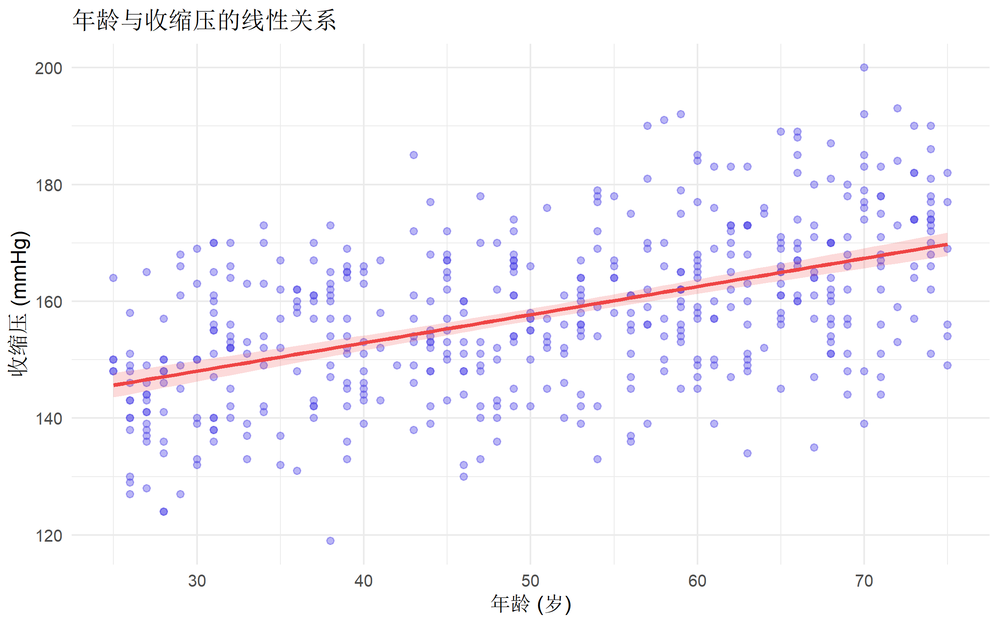
多元线性回归
# 多元模型
model_full <- lm(
sbp ~ age + sex + bmi + smoking + exercise + sodium_intake + alcohol,
data = bp_data
)
summary(model_full)
Call:
lm(formula = sbp ~ age + sex + bmi + smoking + exercise + sodium_intake +
alcohol, data = bp_data)
Residuals:
Min 1Q Median 3Q Max
-32.920 -7.322 0.298 7.201 30.571
Coefficients:
Estimate Std. Error t value Pr(>|t|)
(Intercept) 1.016e+02 4.389e+00 23.136 < 2e-16 ***
age 4.592e-01 3.115e-02 14.744 < 2e-16 ***
sex女 -2.908e+00 9.187e-01 -3.165 0.001646 **
bmi 1.140e+00 1.161e-01 9.822 < 2e-16 ***
smoking从不 -3.040e+00 1.073e+00 -2.833 0.004795 **
smoking现在 4.189e+00 1.256e+00 3.336 0.000915 ***
exercise -2.348e-02 7.794e-03 -3.013 0.002723 **
sodium_intake 3.614e-03 9.488e-04 3.809 0.000157 ***
alcohol 1.899e-01 6.473e-02 2.933 0.003509 **
---
Signif. codes: 0 '***' 0.001 '**' 0.01 '*' 0.05 '.' 0.1 ' ' 1
Residual standard error: 10.24 on 491 degrees of freedom
Multiple R-squared: 0.4613, Adjusted R-squared: 0.4526
F-statistic: 52.56 on 8 and 491 DF, p-value: < 2.2e-16整洁输出
# 使用 gtsummary 生成专业表格
model_full |>
tbl_regression(
label = list(
age ~ "年龄 (每增加1岁)",
sex ~ "性别",
bmi ~ "BMI (每增加1)",
smoking ~ "吸烟状态",
exercise ~ "每周运动 (每增加1分钟)",
sodium_intake ~ "钠摄入 (每增加1mg/天)",
alcohol ~ "酒精摄入 (每增加1g/周)"
)
) |>
add_global_p() |>
add_glance_table(include = c(r.squared, adj.r.squared, AIC, nobs)) |>
bold_p() |>
modify_header(label = "**变量**") |>
modify_caption("**表. 多元线性回归分析结果**")| 变量 | Beta | 95% CI | p-value |
|---|---|---|---|
| 年龄 (每增加1岁) | 0.46 | 0.40, 0.52 | <0.001 |
| 性别 | 0.002 | ||
| 男 | — | — | |
| 女 | -2.9 | -4.7, -1.1 | |
| BMI (每增加1) | 1.1 | 0.91, 1.4 | <0.001 |
| 吸烟状态 | <0.001 | ||
| 曾经 | — | — | |
| 从不 | -3.0 | -5.1, -0.93 | |
| 现在 | 4.2 | 1.7, 6.7 | |
| 每周运动 (每增加1分钟) | -0.02 | -0.04, -0.01 | 0.003 |
| 钠摄入 (每增加1mg/天) | 0.00 | 0.00, 0.01 | <0.001 |
| 酒精摄入 (每增加1g/周) | 0.19 | 0.06, 0.32 | 0.004 |
| R² | 0.461 | ||
| Adjusted R² | 0.453 | ||
| AIC | 3,756 | ||
| No. Obs. | 500 | ||
| Abbreviation: CI = Confidence Interval | |||
模型假设检验
线性回归有四个核心假设（LINE）：
| 假设 | 检验方法 |
|---|---|
| Linearity（线性） | 残差 vs 拟合值图 |
| Independence（独立） | Durbin-Watson 检验 |
| Normality（正态性） | Q-Q 图、Shapiro 检验 |
| Equal variance（方差齐性） | 残差图、Breusch-Pagan 检验 |
综合诊断
# 使用 performance 包一键诊断
check_model(model_full)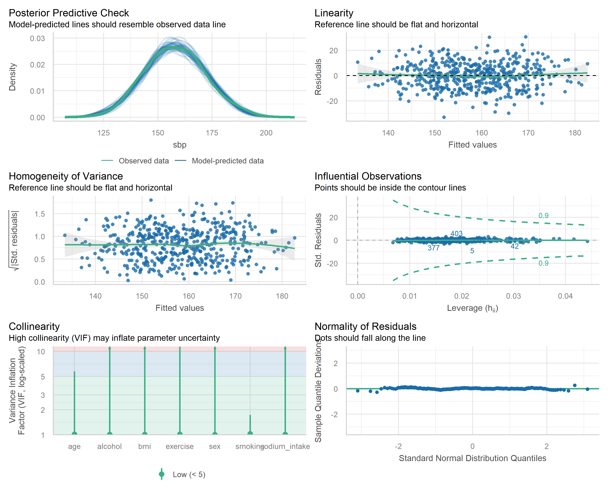
线性关系检验
# 残差 vs 拟合值
bp_data$fitted <- fitted(model_full)
bp_data$residuals <- residuals(model_full)
ggplot(bp_data, aes(x = fitted, y = residuals)) +
geom_point(alpha = 0.4, color = "#4f46e5") +
geom_hline(yintercept = 0, linetype = "dashed", color = "red") +
geom_smooth(method = "loess", color = "#10b981", se = FALSE) +
labs(
title = "残差 vs 拟合值",
subtitle = "检验线性假设和方差齐性",
x = "拟合值",
y = "残差"
) +
theme_minimal(base_size = 12)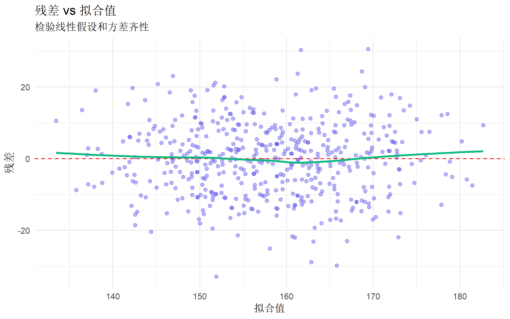
正态性检验
# Q-Q 图
ggplot(bp_data, aes(sample = residuals)) +
stat_qq(color = "#4f46e5", alpha = 0.6) +
stat_qq_line(color = "red") +
labs(
title = "残差的 Q-Q 图",
subtitle = "检验正态性假设",
x = "理论分位数",
y = "样本分位数"
) +
theme_minimal(base_size = 12)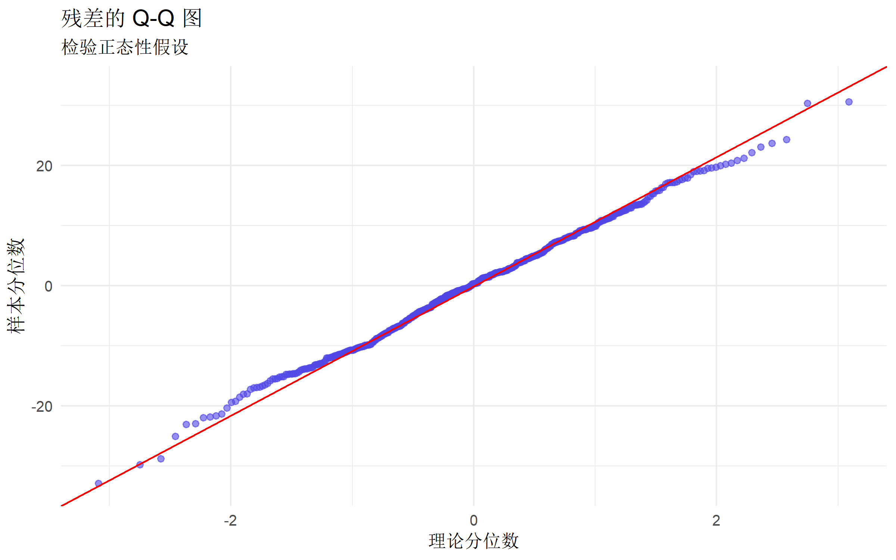
# Shapiro-Wilk 检验（样本量 < 5000）
if (nrow(bp_data) <= 5000) {
shapiro.test(residuals(model_full))
}
Shapiro-Wilk normality test
data: residuals(model_full)
W = 0.99774, p-value = 0.7452方差齐性检验
# Breusch-Pagan 检验
bptest(model_full)
studentized Breusch-Pagan test
data: model_full
BP = 6.9507, df = 8, p-value = 0.542# p < 0.05 表示存在异方差独立性检验
# Durbin-Watson 检验（针对时序数据）
dwtest(model_full)
Durbin-Watson test
data: model_full
DW = 1.9469, p-value = 0.278
alternative hypothesis: true autocorrelation is greater than 0# p < 0.05 表示存在自相关多重共线性检验
多重共线性会导致系数估计不稳定。
# 方差膨胀因子 (VIF)
vif_values <- vif(model_full)
vif_values GVIF Df GVIF^(1/(2*Df))
age 1.015400 1 1.007671
sex 1.005199 1 1.002596
bmi 1.009652 1 1.004814
smoking 1.027711 2 1.006857
exercise 1.013168 1 1.006562
sodium_intake 1.008192 1 1.004088
alcohol 1.010320 1 1.005147# VIF > 5 提示存在共线性问题
# VIF > 10 表示严重共线性# 可视化 VIF（GVIF 针对分类变量）
# vif() 对于分类变量返回 GVIF，需要特别处理
vif_result <- vif(model_full)
# 转换为数据框格式
if (is.matrix(vif_result)) {
# 对于含有分类变量的模型，使用 GVIF^(1/(2*Df))
vif_df <- data.frame(
variable = rownames(vif_result),
vif = vif_result[, "GVIF^(1/(2*Df))"]
)
} else {
vif_df <- data.frame(
variable = names(vif_result),
vif = as.numeric(vif_result)
)
}
ggplot(vif_df, aes(x = reorder(variable, vif), y = vif)) +
geom_col(fill = "#4f46e5", alpha = 0.8) +
geom_hline(yintercept = sqrt(5), linetype = "dashed", color = "red") +
coord_flip() +
labs(
title = "广义方差膨胀因子 (GVIF)",
subtitle = "红线: 阈值 ≈ 2.24 (对应 VIF=5)",
x = "变量",
y = "GVIF^(1/2Df)"
) +
theme_minimal(base_size = 12)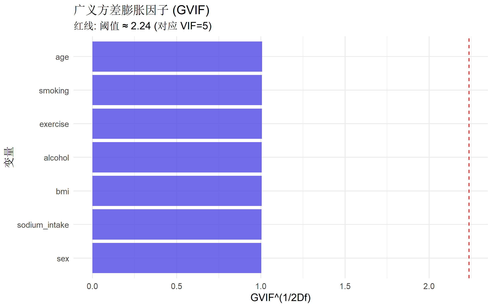
异常值与影响点检测
Cook’s 距离
# 计算 Cook's 距离
bp_data$cooks_d <- cooks.distance(model_full)
# 可视化
ggplot(bp_data, aes(x = seq_along(cooks_d), y = cooks_d)) +
geom_point(alpha = 0.5, color = "#4f46e5") +
geom_hline(yintercept = 4 / nrow(bp_data), linetype = "dashed", color = "red") +
labs(
title = "Cook's 距离",
subtitle = paste0("红线: 阈值 = ", round(4 / nrow(bp_data), 4)),
x = "观测序号",
y = "Cook's D"
) +
theme_minimal(base_size = 12)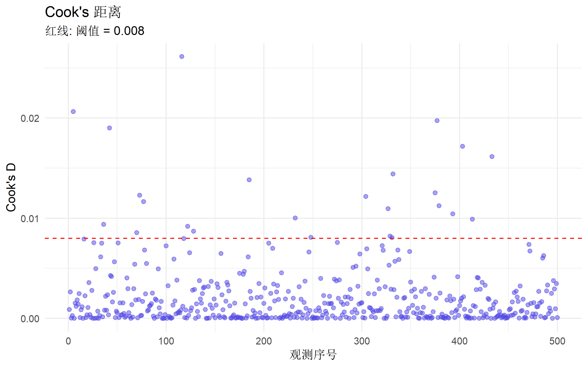
杠杆值
# 杠杆值
bp_data$leverage <- hatvalues(model_full)
p <- length(coef(model_full))
# 高杠杆点
high_leverage <- bp_data |>
filter(leverage > 2 * p / nrow(bp_data))
cat("高杠杆点数量:", nrow(high_leverage), "\n")高杠杆点数量: 4 标准化残差
# 标准化残差
bp_data$std_resid <- rstandard(model_full)
# 异常值（|标准化残差| > 3）
outliers <- bp_data |>
filter(abs(std_resid) > 3)
cat("异常值数量:", nrow(outliers), "\n")异常值数量: 2 处理异常假设
稳健标准误
当存在异方差时，使用稳健标准误：
# HC3 稳健标准误（推荐）
coeftest(model_full, vcov = vcovHC(model_full, type = "HC3"))
t test of coefficients:
Estimate Std. Error t value Pr(>|t|)
(Intercept) 1.0155e+02 4.6311e+00 21.9283 < 2.2e-16 ***
age 4.5920e-01 3.1113e-02 14.7589 < 2.2e-16 ***
sex女 -2.9079e+00 9.2757e-01 -3.1350 0.0018215 **
bmi 1.1402e+00 1.1791e-01 9.6699 < 2.2e-16 ***
smoking从不 -3.0402e+00 1.0941e+00 -2.7786 0.0056683 **
smoking现在 4.1893e+00 1.2760e+00 3.2830 0.0011003 **
exercise -2.3480e-02 8.5328e-03 -2.7517 0.0061478 **
sodium_intake 3.6136e-03 9.4868e-04 3.8091 0.0001571 ***
alcohol 1.8989e-01 6.7544e-02 2.8113 0.0051315 **
---
Signif. codes: 0 '***' 0.001 '**' 0.01 '*' 0.05 '.' 0.1 ' ' 1变量变换
# Box-Cox 变换
library(MASS)
# 找最优 lambda
boxcox_result <- boxcox(model_full, lambda = seq(-2, 2, by = 0.1))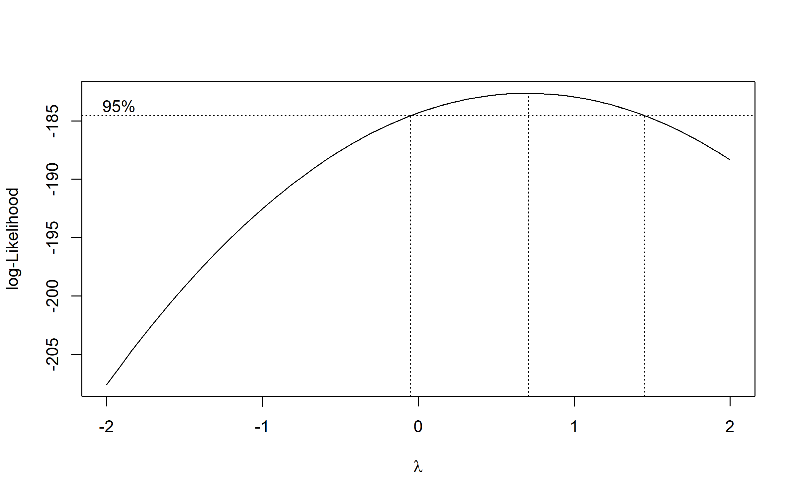
optimal_lambda <- boxcox_result$x[which.max(boxcox_result$y)]
cat("最优 lambda:", optimal_lambda, "\n")最优 lambda: 0.7070707 # 常见变换
# lambda = 0: 对数变换
# lambda = 0.5: 平方根变换
# lambda = -1: 倒数变换加权最小二乘
# 当异方差模式已知时
# 例如：方差与某变量成比例
weights <- 1 / bp_data$age # 示例权重
model_wls <- lm(sbp ~ age + sex + bmi, data = bp_data, weights = weights)交互作用分析
检验交互效应
# 添加交互项
model_interact <- lm(
sbp ~ age * sex + bmi + smoking + exercise,
data = bp_data
)
summary(model_interact)
Call:
lm(formula = sbp ~ age * sex + bmi + smoking + exercise, data = bp_data)
Residuals:
Min 1Q Median 3Q Max
-31.609 -7.411 0.084 6.715 34.174
Coefficients:
Estimate Std. Error t value Pr(>|t|)
(Intercept) 112.455451 4.104454 27.398 < 2e-16 ***
age 0.463709 0.046126 10.053 < 2e-16 ***
sex女 -2.193784 3.354696 -0.654 0.513453
bmi 1.101767 0.118479 9.299 < 2e-16 ***
smoking从不 -2.930479 1.095329 -2.675 0.007712 **
smoking现在 4.648259 1.280288 3.631 0.000312 ***
exercise -0.023534 0.007993 -2.944 0.003388 **
age:sex女 -0.012813 0.063579 -0.202 0.840371
---
Signif. codes: 0 '***' 0.001 '**' 0.01 '*' 0.05 '.' 0.1 ' ' 1
Residual standard error: 10.48 on 492 degrees of freedom
Multiple R-squared: 0.4353, Adjusted R-squared: 0.4272
F-statistic: 54.17 on 7 and 492 DF, p-value: < 2.2e-16# 模型比较
anova(model_full, model_interact)Analysis of Variance Table
Model 1: sbp ~ age + sex + bmi + smoking + exercise + sodium_intake +
alcohol
Model 2: sbp ~ age * sex + bmi + smoking + exercise
Res.Df RSS Df Sum of Sq F Pr(>F)
1 491 51517
2 492 54010 -1 -2493.1 23.761 1.475e-06 ***
---
Signif. codes: 0 '***' 0.001 '**' 0.01 '*' 0.05 '.' 0.1 ' ' 1可视化交互效应
# 使用 interactions 包
interact_plot(
model_interact,
pred = age,
modx = sex,
interval = TRUE,
plot.points = TRUE,
point.alpha = 0.2
) +
labs(
title = "年龄与性别的交互效应",
x = "年龄",
y = "预测收缩压 (mmHg)"
) +
theme_minimal(base_size = 12)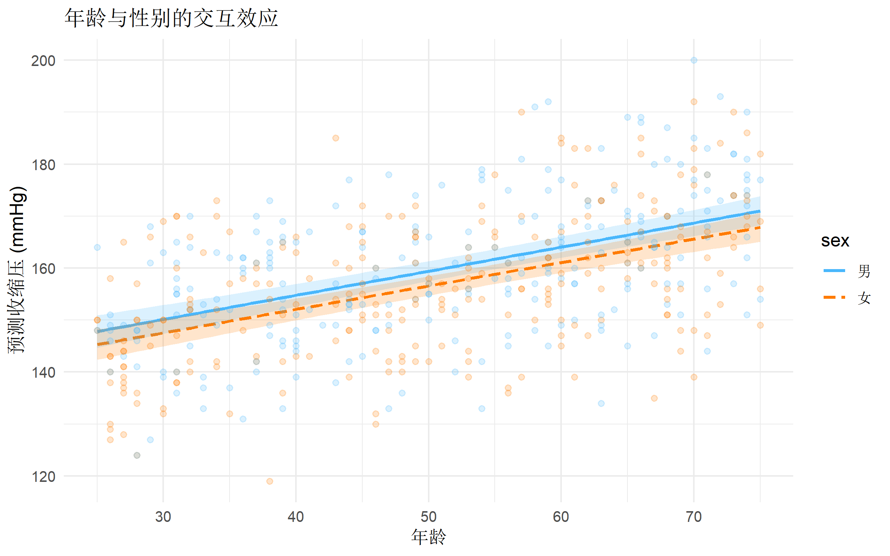
# 简单斜率分析
sim_slopes(model_interact, pred = age, modx = sex)SIMPLE SLOPES ANALYSIS
Slope of age when sex = 男:
Est. S.E. t val. p
------ ------ -------- ------
0.46 0.05 10.05 0.00
Slope of age when sex = 女:
Est. S.E. t val. p
------ ------ -------- ------
0.45 0.04 10.27 0.00非线性关系处理
多项式回归
# 二次项
model_poly <- lm(sbp ~ age + I(age^2) + sex + bmi + smoking, data = bp_data)
summary(model_poly)
Call:
lm(formula = sbp ~ age + I(age^2) + sex + bmi + smoking, data = bp_data)
Residuals:
Min 1Q Median 3Q Max
-30.263 -7.277 0.226 6.874 34.242
Coefficients:
Estimate Std. Error t value Pr(>|t|)
(Intercept) 117.626624 6.523483 18.031 < 2e-16 ***
age 0.080486 0.249815 0.322 0.747452
I(age^2) 0.003828 0.002477 1.546 0.122818
sex女 -2.884773 0.944827 -3.053 0.002386 **
bmi 1.104088 0.119349 9.251 < 2e-16 ***
smoking从不 -2.924807 1.102548 -2.653 0.008241 **
smoking现在 4.399016 1.286443 3.420 0.000679 ***
---
Signif. codes: 0 '***' 0.001 '**' 0.01 '*' 0.05 '.' 0.1 ' ' 1
Residual standard error: 10.54 on 493 degrees of freedom
Multiple R-squared: 0.4279, Adjusted R-squared: 0.4209
F-statistic: 61.45 on 6 and 493 DF, p-value: < 2.2e-16# 检验非线性项是否显著
anova(lm(sbp ~ age + sex + bmi + smoking, data = bp_data), model_poly)Analysis of Variance Table
Model 1: sbp ~ age + sex + bmi + smoking
Model 2: sbp ~ age + I(age^2) + sex + bmi + smoking
Res.Df RSS Df Sum of Sq F Pr(>F)
1 494 54983
2 493 54718 1 265.18 2.3892 0.1228分段线性回归
# 分段回归（假设 50 岁为拐点）
bp_data <- bp_data |>
mutate(
age_under50 = pmin(age, 50),
age_over50 = pmax(age - 50, 0)
)
model_piecewise <- lm(sbp ~ age_under50 + age_over50 + sex + bmi, data = bp_data)
summary(model_piecewise)
Call:
lm(formula = sbp ~ age_under50 + age_over50 + sex + bmi, data = bp_data)
Residuals:
Min 1Q Median 3Q Max
-31.282 -7.424 0.033 6.847 35.994
Coefficients:
Estimate Std. Error t value Pr(>|t|)
(Intercept) 111.28402 4.25153 26.175 < 2e-16 ***
age_under50 0.37026 0.07490 4.943 1.05e-06 ***
age_over50 0.56924 0.07447 7.643 1.11e-13 ***
sex女 -2.65847 0.97658 -2.722 0.00671 **
bmi 1.12761 0.12321 9.152 < 2e-16 ***
---
Signif. codes: 0 '***' 0.001 '**' 0.01 '*' 0.05 '.' 0.1 ' ' 1
Residual standard error: 10.9 on 495 degrees of freedom
Multiple R-squared: 0.3848, Adjusted R-squared: 0.3799
F-statistic: 77.42 on 4 and 495 DF, p-value: < 2.2e-16模型选择
逐步回归
# 向后逐步回归（基于 AIC）
model_step <- step(model_full, direction = "backward", trace = 0)
summary(model_step)
Call:
lm(formula = sbp ~ age + sex + bmi + smoking + exercise + sodium_intake +
alcohol, data = bp_data)
Residuals:
Min 1Q Median 3Q Max
-32.920 -7.322 0.298 7.201 30.571
Coefficients:
Estimate Std. Error t value Pr(>|t|)
(Intercept) 1.016e+02 4.389e+00 23.136 < 2e-16 ***
age 4.592e-01 3.115e-02 14.744 < 2e-16 ***
sex女 -2.908e+00 9.187e-01 -3.165 0.001646 **
bmi 1.140e+00 1.161e-01 9.822 < 2e-16 ***
smoking从不 -3.040e+00 1.073e+00 -2.833 0.004795 **
smoking现在 4.189e+00 1.256e+00 3.336 0.000915 ***
exercise -2.348e-02 7.794e-03 -3.013 0.002723 **
sodium_intake 3.614e-03 9.488e-04 3.809 0.000157 ***
alcohol 1.899e-01 6.473e-02 2.933 0.003509 **
---
Signif. codes: 0 '***' 0.001 '**' 0.01 '*' 0.05 '.' 0.1 ' ' 1
Residual standard error: 10.24 on 491 degrees of freedom
Multiple R-squared: 0.4613, Adjusted R-squared: 0.4526
F-statistic: 52.56 on 8 and 491 DF, p-value: < 2.2e-16# 比较模型
AIC(model_full, model_step) df AIC
model_full 10 3756.468
model_step 10 3756.468BIC(model_full, model_step) df BIC
model_full 10 3798.614
model_step 10 3798.614模型比较
# 使用 performance 包
compare_performance(model_full, model_step, rank = TRUE)# Comparison of Model Performance Indices
Name | Model | R2 | R2 (adj.) | RMSE | Sigma | AIC weights
----------------------------------------------------------------------
model_full | lm | 0.461 | 0.453 | 10.151 | 10.243 | 0.500
model_step | lm | 0.461 | 0.453 | 10.151 | 10.243 | 0.500
Name | AICc weights | BIC weights | Performance-Score
-----------------------------------------------------------
model_full | 0.500 | 0.500 |
model_step | 0.500 | 0.500 | 变量选择方法比较
| 方法 | 优点 | 缺点 |
|---|---|---|
| 向前选择 | 计算量小 | 可能遗漏重要变量 |
| 向后消除 | 考虑所有变量 | 初始模型可能不稳定 |
| 双向逐步 | 综合两者优点 | 可能不稳定 |
| LASSO | 自动选择+正则化 | 系数有偏 |
| 最优子集 | 找全局最优 | 计算量大 |
预测与推断
预测新数据
# 新观测值
new_patient <- tibble(
age = 55,
sex = factor("男", levels = levels(bp_data$sex)),
bmi = 27,
smoking = factor("曾经", levels = levels(bp_data$smoking)),
exercise = 120,
sodium_intake = 2500,
alcohol = 15
)
# 点预测
predict(model_full, newdata = new_patient) 1
166.6559 # 置信区间（均值）
predict(model_full, newdata = new_patient, interval = "confidence") fit lwr upr
1 166.6559 164.514 168.7978# 预测区间（个体）
predict(model_full, newdata = new_patient, interval = "prediction") fit lwr upr
1 166.6559 146.4164 186.8954标准化回归系数
# 标准化系数（β系数）
# 方法1：手动标准化
bp_scaled <- bp_data |>
mutate(across(where(is.numeric) & !id, scale))
model_std <- lm(
sbp ~ age + bmi + exercise + sodium_intake + alcohol,
data = bp_scaled
)
tidy(model_std) |>
dplyr::filter(term != "(Intercept)") |>
dplyr::select(term, estimate) |>
dplyr::arrange(desc(abs(estimate)))# A tibble: 5 × 2
term estimate
<chr> <dbl>
1 age 0.504
2 bmi 0.339
3 sodium_intake 0.135
4 alcohol 0.102
5 exercise -0.0846边际效应
# 使用 marginaleffects 包
library(marginaleffects)
# 平均边际效应
avg_slopes(model_full) |>
as.data.frame() |>
dplyr::select(term, estimate, std.error, p.value) term estimate std.error p.value
1 age 0.45919790 0.0311456744 3.384975e-49
2 alcohol 0.18988683 0.0646395461 3.307354e-03
3 bmi 1.14015742 0.1160774188 9.018172e-23
4 exercise -0.02347969 0.0077944025 2.592091e-03
5 sex -2.90793412 0.9187397641 1.550117e-03
6 smoking -3.04016622 1.0729621586 4.605098e-03
7 smoking 4.18925856 1.2559039473 8.509961e-04
8 sodium_intake 0.00361362 0.0009488015 1.397469e-04结果可视化
系数图
# 森林图风格的系数可视化
coef_data <- tidy(model_full, conf.int = TRUE) |>
filter(term != "(Intercept)") |>
mutate(
significant = p.value < 0.05,
term = factor(term, levels = rev(term))
)
ggplot(coef_data, aes(x = estimate, y = term)) +
geom_vline(xintercept = 0, linetype = "dashed", color = "gray50") +
geom_errorbarh(aes(xmin = conf.low, xmax = conf.high, color = significant),
height = 0.2, linewidth = 0.8
) +
geom_point(aes(color = significant), size = 3) +
scale_color_manual(
values = c("TRUE" = "#4f46e5", "FALSE" = "#9ca3af"),
labels = c("TRUE" = "显著", "FALSE" = "不显著")
) +
labs(
title = "回归系数及95%置信区间",
x = "回归系数 (β)",
y = NULL,
color = "统计显著性"
) +
theme_minimal(base_size = 12) +
theme(
plot.title = element_text(hjust = 0.5, face = "bold"),
legend.position = "bottom"
)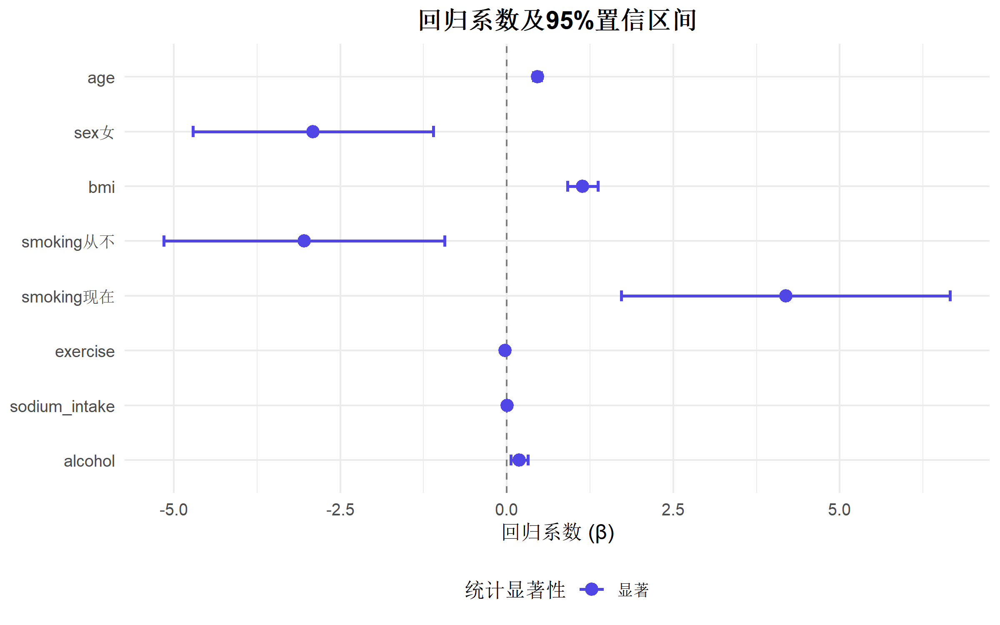
预测值 vs 实际值
ggplot(bp_data, aes(x = fitted, y = sbp)) +
geom_point(alpha = 0.4, color = "#4f46e5") +
geom_abline(slope = 1, intercept = 0, color = "red", linetype = "dashed") +
labs(
title = "预测值 vs 实际值",
x = "预测收缩压 (mmHg)",
y = "实际收缩压 (mmHg)"
) +
theme_minimal(base_size = 12) +
coord_equal()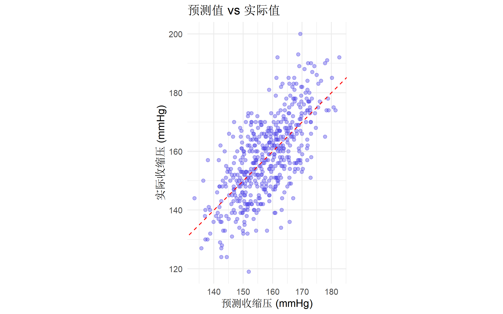
常见问题与陷阱
1. 解释相关性 vs 因果性
# 回归系数描述的是关联，不是因果
# 因果推断需要：
# - 随机对照试验
# - 或使用因果推断方法（如 PSM、IV、DiD）2. 类别变量编码
# R 默认使用 dummy coding
contrasts(bp_data$sex) 女
男 0
女 1contrasts(bp_data$smoking) 从不 现在
曾经 0 0
从不 1 0
现在 0 1# 修改参照组
bp_data$smoking_relevel <- relevel(bp_data$smoking, ref = "现在")3. 缺失值处理
# 默认：完全案例分析
# 推荐：多重插补
# library(mice)
# imputed_data <- mice(bp_data, m = 5)
# fit <- with(imputed_data, lm(sbp ~ age + sex + bmi))
# pooled <- pool(fit)4. 外推风险
# 不要将模型外推到超出训练数据范围的区域
# 例如：模型基于 25-75 岁数据，不应预测 90 岁完整分析模板
# ========== 多元线性回归完整流程 ==========
library(tidyverse)
library(performance)
library(car)
library(gtsummary)
# 1. 拟合模型
model <- lm(y ~ x1 + x2 + x3, data = data)
# 2. 查看结果
summary(model)
# 3. 模型诊断
check_model(model) # 综合诊断
vif(model) # 多重共线性
shapiro.test(residuals(model)) # 正态性
# 4. 结果表格
tbl_regression(model)
# 5. 预测
predict(model, newdata = new_data, interval = "confidence")总结
| 步骤 | 内容 | R 函数 |
|---|---|---|
| 模型拟合 | 估计系数 | lm() |
| 诊断检验 | 假设检验 | check_model(), vif() |
| 异常值检测 | Cook’s D, 杠杆值 | cooks.distance(), hatvalues() |
| 模型选择 | 逐步回归 | step() |
| 结果展示 | 专业表格 | tbl_regression() |
| 预测 | 置信/预测区间 | predict(..., interval = ) |
报告线性回归的 Checklist
推荐阅读
- Kutner MH et al. Applied Linear Statistical Models (5th ed.)
- Fox J. Applied Regression Analysis and Generalized Linear Models
- UCLA 统计咨询：回归分析